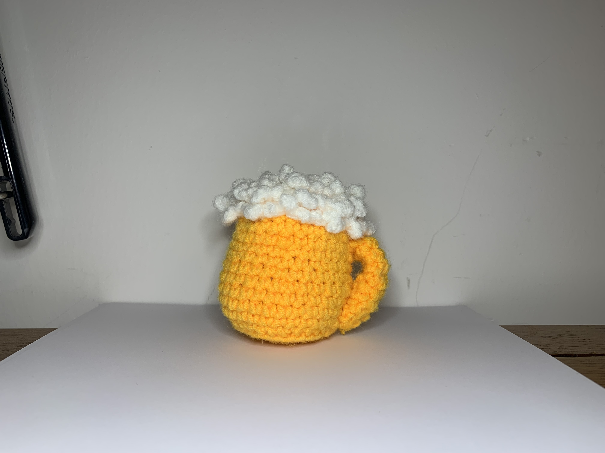
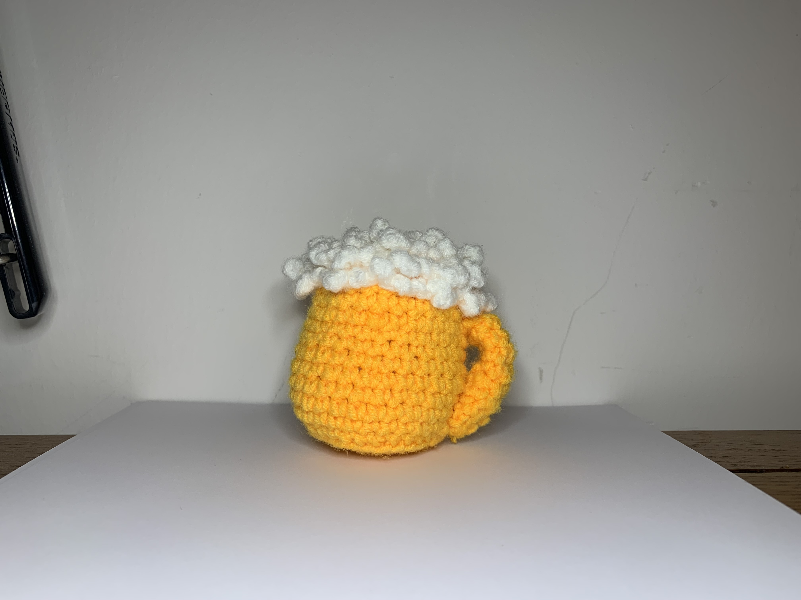
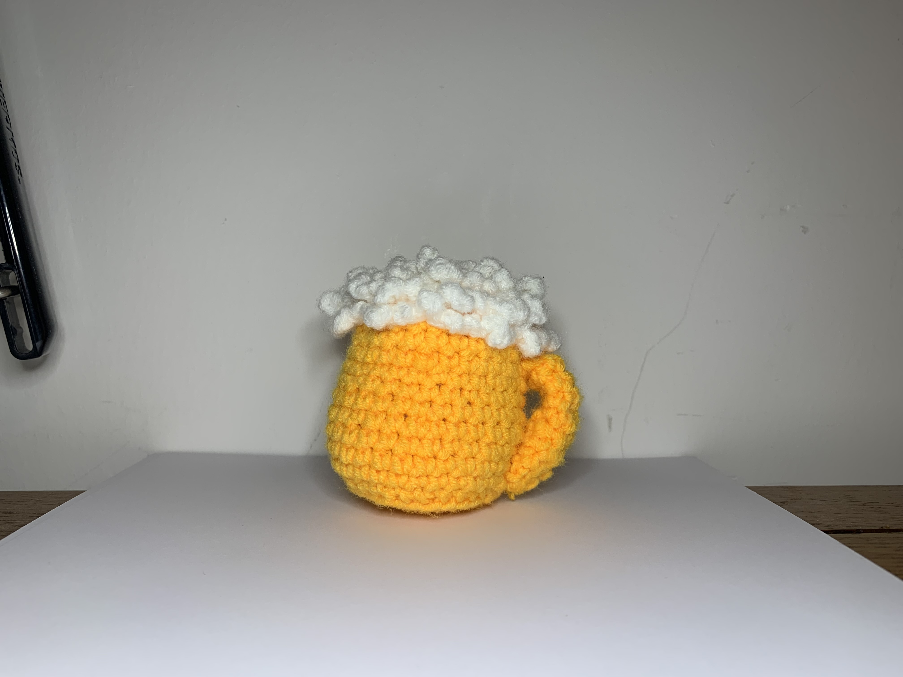

Selected Works
A cosy collection of my crochet pieces — made by hand, loop by loop.


 

Hand-crocheted plushies, accessories, and small gifts
A cosy collection of my crochet pieces — made by hand, loop by loop.
